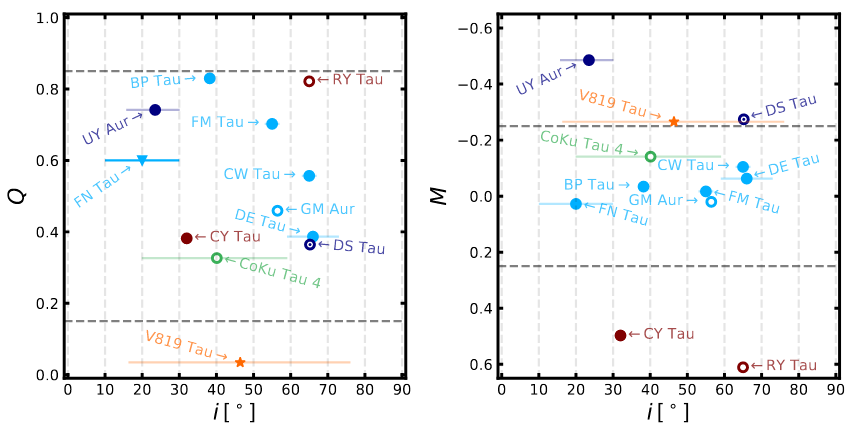
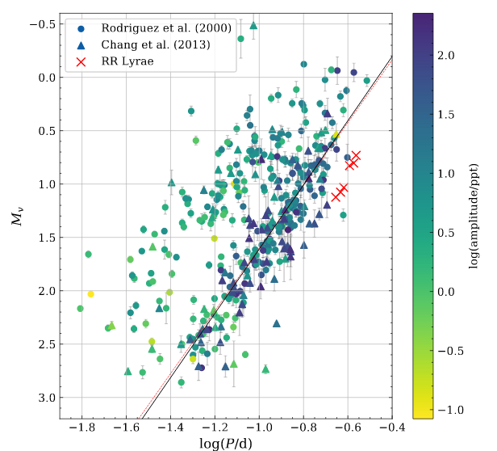
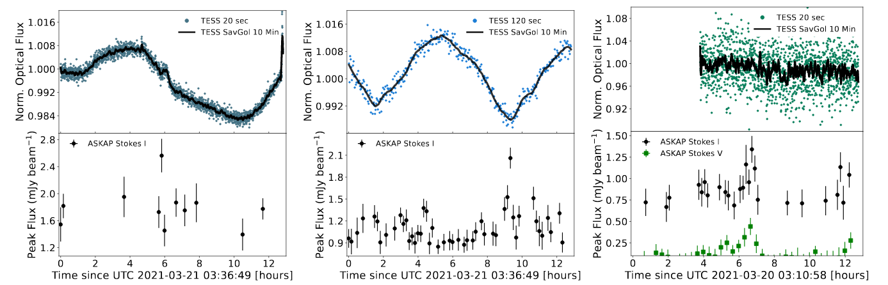

Welcome TESS followers to our latest news bulletin! Before we highlight some of the more recent papers from the archive, we would like to introduce you to the newest member of our team -- Dr. Tyler Pritchard -- who is joining us as a TESS GI Support Scientist.
This week, we are looking at three papers from the archive. Enjoy!
Understanding Accretion Variability Through TESS Observations of Taurus (Robinson et al., 2022) :
A prominent observational signature of classical T Tauri stars is variability produced by multiple processes and spanning a range of timescales. Most progress in the field has been aimed at understanding the observed variability on timescales of hours to days, while only a handful of studies focused on variability on timescales of minutes to hours. This paper presents the analysis of the latter type of variability in 14 T Tauri stars in the Taurus star-forming region. Robinson et al. (2022) combine TESS short-cadence data with ground-based UBVRI photometry from the Lower Discovery Telescope and HST NUV-NIR spectroscopy to estimate rotation periods, empirically classify the observed variability, measure mass accretion rates, and identify time-lags between. The authors argue that some of the variability detected in TESS data can be linked to accretion. They have also uncovered evidence for longitudinal density stratification of accretion columns, have identified CY Tau as a face-on dipper, and found no clear global correlation between TESS flux and the accretion luminosity.
Revisiting bright delta Scuti stars and their period-luminosity relation with TESS and Gaia DR3 (Barac et al., 2022) :
Period-luminosity relations of variable stars such as Cepheids, RR Lyr, and delta Scuti have been studied for decades. Many of these studies have measured periods using ground-based observations which are subject to the day-night cycle and affected by atmospheric variability. The continuous, high-cadence, high-precision, all-sky photometry from TESS provides the opportunity to refine these measured periods and more accurately position the targets on a period-luminosity diagram. This paper presents the analysis of 434 delta Scuti star observed from TESS, including targets with only a handful of prior observations. Barac et al. (2022) combine three years of short and long-cadence TESS photometry with Gaia DR3 parallaxes to measure the frequency and amplitude of the strongest pulsations modes for 372 delta Scuti stars. They find most of these lie on a ridge in the period-luminosity diagram corresponding to pulsations in the fundamental radial mode, confirm the presence of a second ridge at half the period, and identify 62 targets as mostly binary stars, RR Lyr, or beta Cep instead of delta Scuti variables.
Searching for stellar flares from low mass stars using ASKAP and TESS (Rigney et. al., 2022) :
Low-mass stars can often produce flares and superflares with energies of up to 1036 ergs, and potentially even higher. In turn, these flares can produce coronal mass ejections, which are notoriously difficult to confirm on stars other than the Sun. Bursts of radio emissions, in particular at low frequencies, can provide a powerful method to detect flares and coronal mass ejections in low-mass stars, and shed light on the emission mechanisms responsible for these events. This paper presents the observations and analysis of four known active M dwarfs in the Southern hemisphere. Rigney et al. (2022) observed the targets with the Australian Square Kilometer Array Pathfinder Telescope and combined the data with the simultaneous TESS photometry from Sector 36 to detect variable radio emissions. The authors found no optical flares in the TESS lightcurves for any of the targets, no polarization from CD-56 1023A and TIC 55497266, strong circular polarization from WOH S 2, and weak circularly-polarized radio bursts from HD 270712. Further combined radio and optical observations are needed to constrain the mechanisms responsible for radio emission from low mass stars.

Fig. 1: Taken from Robinson et. al. (2022). Left panel: Lightcurve periodicity measured from TESS data (Q) vs estimated disk inclination (i). Accreting targets are represented by light blue and purple symbols. Right panel: Lightcurve symmetry (M) vs disk inclination (i).

Fig. 2: Taken from Barac al. (2022). Measured period vs luminosity of their delta Scuti sample for targets brighter than V = 12 mag and fractional parallax uncertainty less than 5%.

Fig. 3: Taken from Rigney et. al. (2022). TESS (upper panels) and ASKAP Stokes I (lower panels) observations of three active M dwarfs. The radio data is 4 sigma above the RMS for all sources.